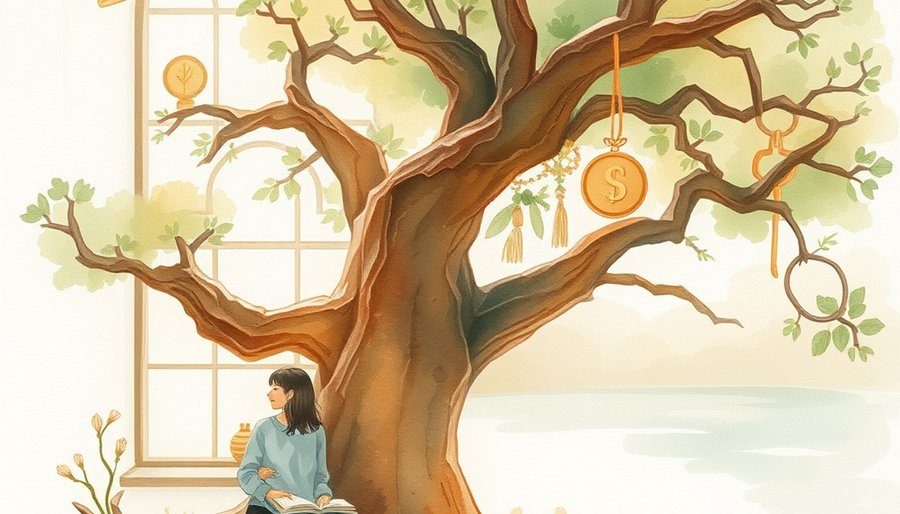

消费是永久需求，人每天要吃喝、洗漱、用纸，经济再差也只是降级，不会消失。收入平滑、可预测，天然适合股息、复利和跨代传承。可口可乐卖了130年糖水，宝洁卖了180年肥皂，它们活下来有道理。
但直觉错在采样。被看见的百年企业全是消费品牌，恰恰因为消费品牌活在公众心智里。它们每年花几十亿美元打广告，就是为了让你记住。所以你一想到百年企业，跳出来的都是它们。长寿的B2B企业数量上才是主流，只是它们不需要让普通人知道。日本帝国数据银行统计过，日本百年企业超过33000家，其中大半是B2B制造和批发，比如生产紧固件、工业刷、切削工具的企业，很多活了一百多年，普通人闻所未闻。德国管理学家赫尔曼·西蒙追踪的隐形冠军群体，大量是卖工业零部件的，超过百年历史的比比皆是。它们是工厂主、采购员、工程师知道的名字，不在超市货架上，不在电视广告里。用“我听说过的百年企业”当样本，从一开始就被采样偏差污染了。
决定寿命的分界线，藏在三个交易结构变量里。
第一个变量：这笔采购花的是资本开支还是运营开支。企业买设备、建产线，是资本开支，跟着宏观和产能周期走，深V是常态。英伟达的显卡卖给数据中心做资本开支时，业绩能五年七倍，反过来，它某年大幅回撤也是必然。但如果企业买的是刀片、墨盒、软件订阅，这些被归入运营开支，每个月都得花，周期性就弱得多。运营开支是日常消耗品，企业不会因为经济差就不买刀片、不续软件，就像家庭不会因为失业就不买卫生纸。B2B里也有平滑的生意，关键看开支类型。
第二个变量：重复购买还是一次性交易。安防监控每年续费，检测认证每年重审，企业SaaS按年订阅。这些B2B业务的现金流结构，和消费者每月交网费没有本质区别。一次性卖设备是冲浪，每年收服务费是行船。劳斯莱斯航空发动机不卖引擎，卖“飞行小时”：航空公司按实际使用时间付费。这种模式把一台发动机的生意变成了几十年的现金流，客户切换成本极高。把一次性资本开支改造成运营开支，是把冲浪板换成船的动作。
第三个变量：资产是被时间加固还是被时间清算。这是终极变量。品牌心智越老越值钱，认证关系越久越难替代，网络效应越多人用越牢固。这些资产随时间加固。先进制程、独门配方、专利，全是等着被迭代清算的资产。今天领先三纳米，明天别人追上来，你的身家就清零。老钱企业有技术，但不把身家押在技术领先上。茅台提价没人换酒，靠的是心智垄断，与技术领先无关。技术天天在折旧，心智越老越厚。

把三个变量收拢，一门能传代的生意有五个特征，缺一不可。
经常性收入。明天停止销售，今天的存量还能继续收钱：订阅、续费、复购、特许经营费、租金。这是老钱的基本盘。微软Office 365、Adobe Creative Cloud都是把一次性卖软件改成了按年收费，存量用户每年自动续费，新客户停掉也不影响基本盘。
低折旧资产。资产随时间加固还是清零？品牌心智、认证关系、网络效应属于前者；先进制程、独门配方、专利属于后者。老钱企业把身家押在前一类上。可口可乐的配方不是专利，是秘密，但真正值钱的是品牌，秘密泄露了也未必有人能抢走它的消费者。
定价权。原材料涨价、工资上涨，成本能转嫁给下游而客户不跑。茅台提价没人换酒，地铁涨价你照样坐。定价权来自心智垄断、认证壁垒或习惯惯性。这种能力让企业免于被成本波动杀死，是长寿的前提。
需求刚性。经济再差也有可预见的最低消费。奢侈品也是刚性需求：目标客群对经济波动不敏感，衰退期它活得比中产品牌好。路易威登的客户不会因为股市跌了就不买包，但中产可能就不换车了。非必需品不等于周期品，关键看客户钱包厚度。
边际成本递减。每多一个客户的边际成本趋近零：软件复制没成本，品牌溢出没成本。规模是复利不是负担，利润率和规模同步上升，复利才滚得起来。软件和品牌是典型的边际成本趋零资产，规模越大利润率越高，这是复利的前提。
这五个特征对应四种长寿模式。心智垄断型：可口可乐、茅台，品牌心智是资产，不折旧不纳税不怕抄。订阅/经常性服务型：微软、Adobe、劳斯莱斯卖飞行小时，把一次性资本开支改造成运营开支，这是技术公司转型老钱的唯一路径。认证壁垒型：军工、医疗设备、德国隐形冠军，换供应商要重新认证几年，在位者被制度性保护。特许经营/收租型：港口、电网、水厂、连锁加盟，在必经之路上设卡收租，重资产但永续。
这套框架能照出两个常见误判。
第一个误判：消费等于老钱，B2B等于周期。房子和车子都是消费，却是全市场周期之王。2008年次贷危机摧毁的就是消费端的房产。分界线永远是收入结构，客户类型只是标签。卖房子是一次性资本交易，卖刀片是重复运营消耗。前者是冲浪，后者是行船。
第二个误判：技术领先等于护城河。技术是所有资产里折旧最快的，今天领先，明天可能被颠覆。老钱用技术，但从来不等技术吃饭。英伟达最近几年拼命推算力订阅，把卖显卡的周期性收入改造成按使用量付费的经常性收入，这就是这条框架的现场演示。它知道靠制程领先活不了三代。
最后，三个问题可以帮任何人快速检验一门生意的底色。假设明天起禁止你接新客户，现有存量还能收几年钱？假设你的技术被瞬间复制，还会有人买你吗？假设经济衰退三年，你的收入会腰斩还是一成不动？三个都能答“稳”，才是老钱候选。答不上来的，再赚钱也只是高收入的周期工。
这套框架不止能拿来评估一家公司。
尾声
个人的职业不能直接套用这个框架。人力资本本身就是高折旧资产，技能几年不更新就贬值。但理解生意的寿命，至少能让你看清自己所在的船是什么材质，什么时候该换船。
小汪老师的成长观察笔记